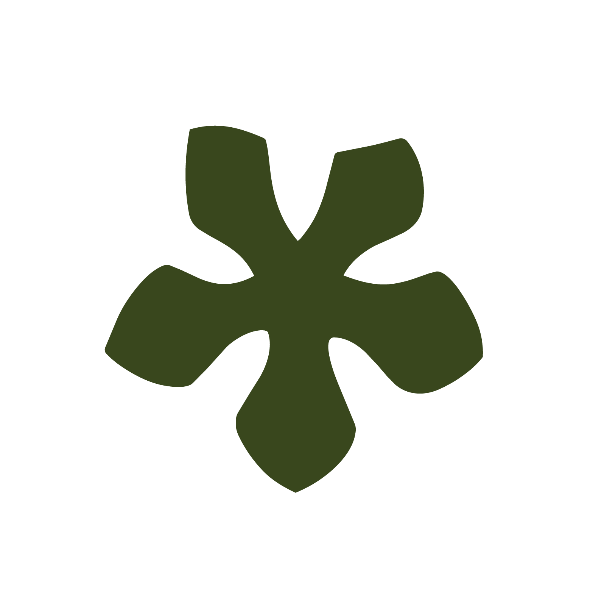

Thallo Digital · Invitación
Taller de flores, cena de rebranding launch
Te invitamos a compartir una tarde de flores, buena comida y conversaciones para celebrar lo que viene.
Fecha y hora
Viernes 28 de Agosto
5:00 pm

Una nueva etapa merece celebrarse.